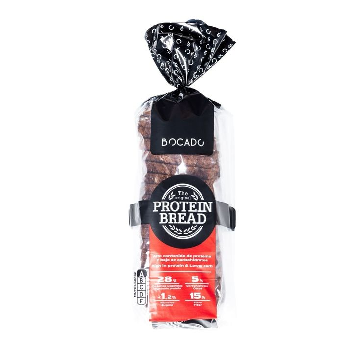
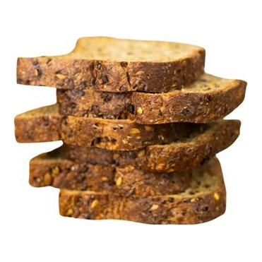
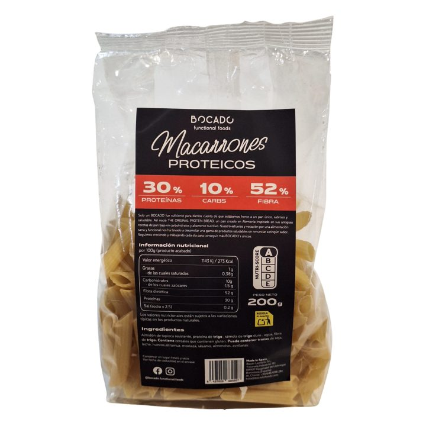
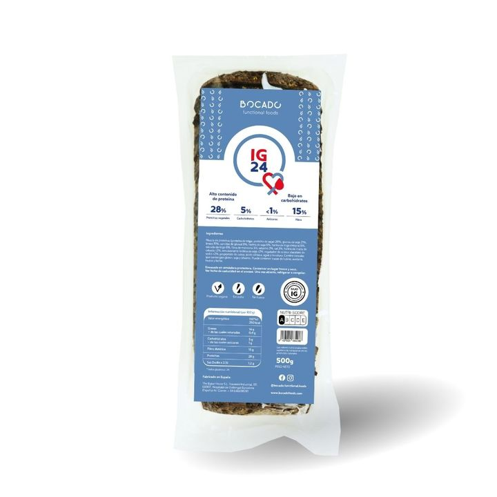
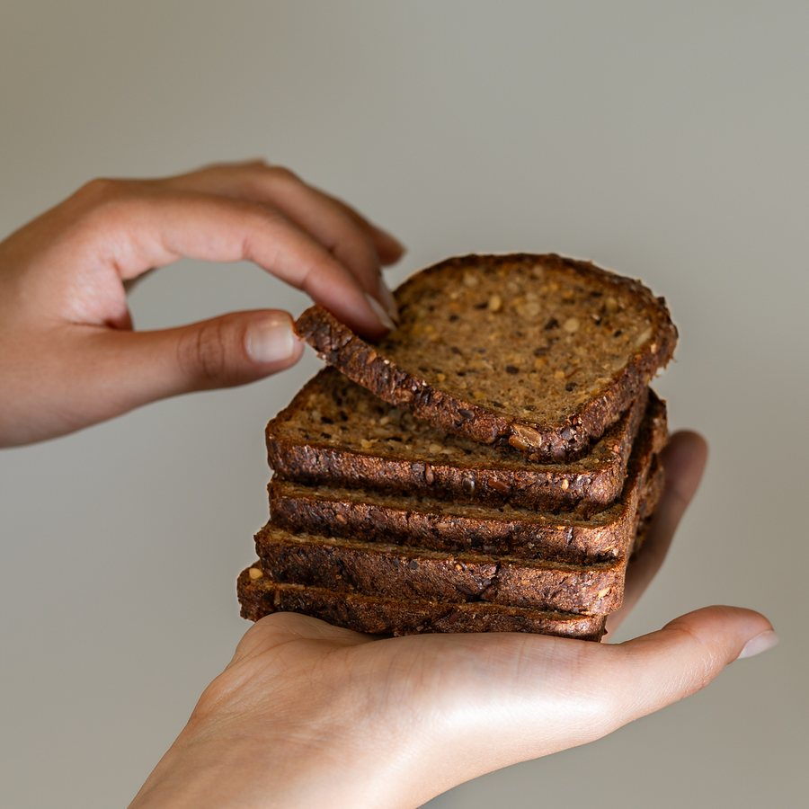
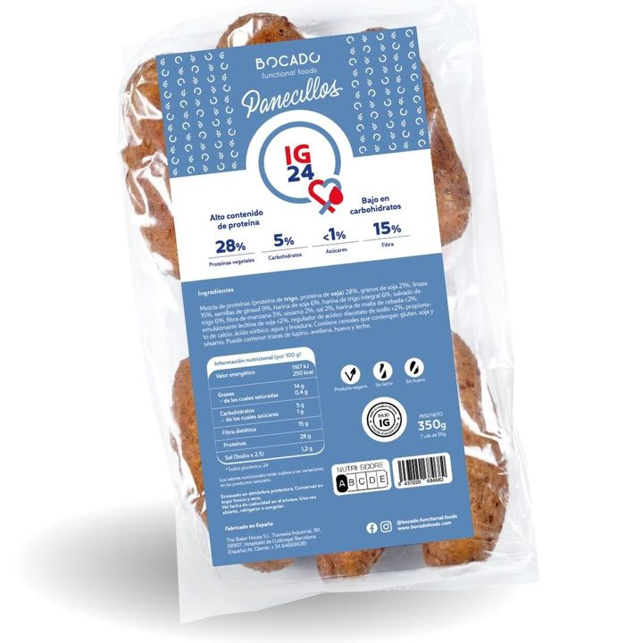
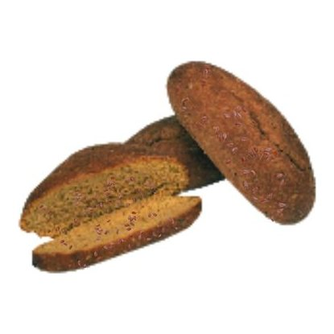
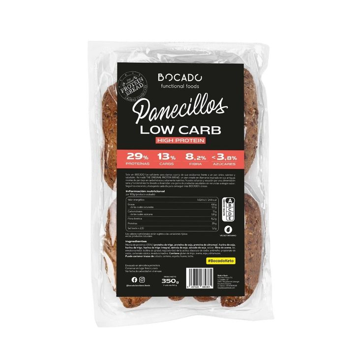
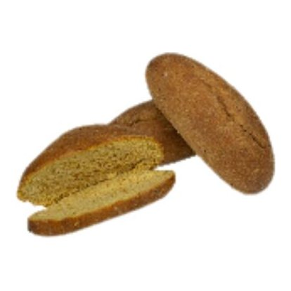

Original
Macaronis protéinés avec 30 g de protéines et 52 g de fibres pour 100 g, et seulement 10 g de glucides.
Macaronis protéinés avec 30 g de protéines et 52 g de fibres pour 100 g, et seulement 10 g de glucides. Préparés avec de l’amidon de tapioca résistant, de la protéine de blé et de la semoule de blé dur, ils se cuisent comme des pâtes classiques et s’accordent avec toutes vos sauces : tomate, bolognaise, pesto ou gratinés au fromage. Un moyen simple de savourer une assiette de pâtes avec beaucoup plus de protéines et de fibres.
Amidon de tapioca résistant, protéine de blé, semoule de blé dur, eau, fibre de blé.
| Valeurs moyennes | Pour 100 g |
|---|---|
| Énergie | 1143 kJ / 273 kcal |
| Matières grasses | 1 g |
| dont acides gras saturés | 0,38 g |
| Glucides | 10 g |
| dont sucres | 1,5 g |
| Fibres alimentaires | 52 g |
| Protéines | 30 g |
| Sel | 0,2 g |
Les valeurs nutritionnelles sont sujettes aux variations naturelles des produits naturels.


Original

IG24

IG24

Low CarbNotre boutique en ligne est en espagnol. Si vous êtes dans un autre pays, ou si vous êtes un distributeur ou une marque intéressée par le private label, écrivez-nous et nous vous répondrons en français.